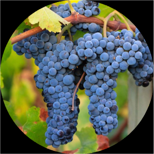

CEPAS TINTAS
-
Malbec Desde hace mucho tiempo se emplea como uva para mezclar en todo el sudoeste francés, incluido Burdeos, pero es la uva dominante en Cahors, donde se conoce como Auxerrois o Coty. Produce vinos de elaboración rústica, adecuados sólo para un envejecimiento a medio plazo. Los emigrantes la llevaron a Argentina, y en Mendoza se encontró tan cómoda que se convirtió en la uva tinta más plantada del país. Con ella se logran vinos gloriosamente aterciopelados, concentrados e intensos, ricos en alcohol y extracto. Los productores más ambiciosos de Cahors han tomado lo mejor de Mendoza como su modelo.
-
Cabernet Sauvignon Sinónimo de vino tinto de calidad, capaz de envejecer y alcanzar un esplendor sutil. Por esta razón, la Cabernet Sauvignon es también la variedad para vino tinto más internacional, pero debido a su maduración relativamente tardía solo resulta viable en los climas más cálidos. No madura necesariamente al máximo de sus posibilidades todos los años, ni siquiera en su tierra natural, el Médoc / Graves; sin embargo, cuando lo hace, el color, el sabor y los taninos de las pieles gruesas de estas uvas diminutas y oscuras pueden ser notables. Con una elaboración cuidadosa y envejecimiento en barrica, puede producir algunos de los tintos más longevos e interesantes. En Burdeos, y cada vez en más lugares, se mezcla con Merlot y Cabernet Franc, aunque puede resultar deliciosa sin mezclar si se cultiva en un lugar cálido como Chile o en la costa del norte de California, su segundo hogar.
-

Merlot Compañera de mezclas habitual de la Cabernet Sauvignon, es más clara y carnosa. Se utiliza sobre todo en Burdeos, donde su maduración más temprana hace que resulte mucho más fácil de cultivar y que, por esta razón, sea la uva más plantada allí. Siempre madura con más facilidad que la Cabernet Sauvignon en añadas más frías, y es más alcohólica en las más cálidas. Sus uvas, más grandes, y los hollejos, más finos, dan lugar a vinos en general menos tánicos y más opulentos que se pueden disfrutar antes. La Merlot también tiene una existencia independiente como varietal, sobre todo en Estados Unidos, donde se la considera más fácil de beber que la Cabernet, asi como en el nordeste de Italia, donde madura con menos dificultad. Alcanza su apogeo en Pomerol, donde da lugar a esencias voluptuosas y aterciopeladas. Es habitual en Chile, donde se confundió durante mucho tiempo con la Carmenère.
-
Cabernet Franc La progenitora de la Cabernet Sauvignon es menos intensa y más suave que esta. Dado que madura antes, se encuentra en abundancia en el Loira y en los suelos más fríos y húmedos de Saint-Émilion, donde se mezcla con Merlot. En el Médoc / Graves se planta como seguro contra la incapacidad de la Cabernet Sauvignon para madurar. Mucho más resistente a los inviernos fríos que la Merlot. En el nordeste de Italia suele tener un atractivo sabor herbáceo.
-
Syrah El norte del valle del Ródano es su hogar ideal, donde se convierte en los famosos Hermitage y Côte Rôtie, oscuros y longevos (en Côte Rôtie tradicionalmente se perfuman con un poco de Viognier). La Syrah se planta hoy en todo el sur de Francia, donde es habitual incluirla en mezclas. En Australia, donde se la llama Shiraz y tiene un sabor bastante diferente, es la uva tinta más plantada (con el resultado de vinos densos y potentes en lugares tan cálidos como Barossa, a pesar de lo cual puede seguir teniendo un toque de pimienta negra en los puntos más fríos de Victoria). En la actualidad, viticultores de todo el mundo experimentan con esta uva que tanto se hace querer y cuyos vinos, por madura que esté, siempre aportan un toque de sabor al final. Cada vez es más importante y más respetada en Chile, Sudáfrica, Nueva Zelanda y el estado de Washington, y también existen extensas plantaciones en Argentina.
-
Pinot Noir Esta es la variedad de uva más esquiva. De maduración relativamente temprana y muy sensible al terroir, plantada en un lugar cálido madurará con demasiada rapidez y no conseguirá desarrollar ninguno de los diversos y fascinantes compuestos de sabor que sus hollejos, relativamente finos, pueden albergar. Su lugar ideal es la Côte d'Or, en la Borgoña, donde puede transmitir complejas diferencias de terroir como ninguna otra variedad, siempre que los clones y las técnicas vitivinicolas sean las adecuadas. Los evocadores encantos de los grandes borgoñas tintos han hecho que viticultores de todo el mundo intenten imitarlos, pero hasta el momento solo Alemania, Nueva Zelanda, Oregón y los rincones más frios de California y Australia han tenido suerte. Rara vez se mezcla para elaborar vinos suaves, pero con la Chardonnay y la emparentada, la Pinot Meunier, forma parte de la receta del Champagne.
-

Tempranillo La uva más famosa de España. Conocida como "Tinto Fino" o "Tinto del Pais", es la base de los tintos de la Ribera del Duero. En La Rioja (España) se mezcla con Garnacha, y en Cataluña se le conoce como "Ull de Llebre", mientras que en Valdepeñas como "Cencibel". En Navarra, suele mezclarse con uvas de Burdeos. Como "Tinta Roriz" se emplea desde hace tiempo en el oporto y cada vez más como uva para vino de mesa en Portugal, donde se conoce como Aragonês (Alentejo). Su brotación temprana la hace vulnerable a las heladas primaverales; su piel fina la expone a la podredumbre, pero se valora en todo el mundo.
-

Garnacha / Grenache Se encuentra por todo el Mediterráneo, y es la uva más abundante en el sur del Ródano, donde se mezcla con Mourvèdre, Syrah y Cinsault. Se cultiva también en el Rosellón, donde resulta muy útil (junto con la Grenache Blanc y la Grenache Gris) para la elaboración de los Vins Doux Naturels de la región por sus elevados niveles de alcohol. Como Garnacha es la uva tinta más plantada en España, por lo general en forma de parras viejas con un gran valor. En Córcega, bajo el nombre de Cannonau, y como Grenache en California o Australia, cada vez goza de mayor respeto.
-
Sangiovese La uva más plantada, en sus múltiples formas, en Italia, y especialmente en el centro del país, donde se manifiesta con mayor gloria en el Chianti Classico, el Brunello di Montalcino y el Prugnolo Gentile de Montepulciano. Los clones menos nobles producen un vino tinto ligero y ácido. En la actualidad, muchos productores ambiciosos de la Toscana sacan el máximo color y sabor de esta uva, que cada vez se planta en más lugares.